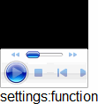

根据 HTML4.01 规范中的描述，OBJECT 元素定义一个嵌入的对象。允许规定插入 HTML 文档中的对象的数据和参数，以及可用来显示和操作数据的代码。OBJECT 元素的初衷是为取代 IMG 和 APPLET 元素。不过由于漏洞以及缺乏浏览器支持，这一初衷并未实现。浏览器的对象支持有赖于对象类型。不幸的是，主流浏览器使用了各自不同的代码来加载相同的对象类型。
classid 属性会指定一个通过 URI 的对象执行的地址，这个属性会和一些 OBJECT 的其他属性配合。
关于 classid 属性的详细信息，请参考 HTML4.01 规范 13.3 Generic inclusion: the OBJECT element 中的内容。
而 IE 对于 classid 属性有自己的解释方式：类标识符（class identifier）。格式形如：clsid:XXXXXXXX-XXXX-XXXX-XXXX-XXXXXXXXXXXX，由 ActiveX 组件注册在 Windows 的系统注册表中。
更多信息，请参考 MSDN：CLASSID Attribute 及 Class Identifier
IE Chrome Safari 支持通过为 OBJECT 元素设置 classid 引入 Windows 下的 Media Player 或 Flash 插件。而 Windows 版的 Firefox 与 Opera 无法支持这种形式引入这些插件。
使用这种方式嵌入 Media Player 或 Flash 插件会导致在某些浏览器中无法生成插件，甚至 JavaScript 由于访问了插件的某些特殊属性而报错。
此外由于对于OBJECT 元素生成的 HTMLObjectElement 对象，classid 并不是其标准的 DOM 属性，所以仅仅 IE 支持通过 "ObjectElement.classid" 的方式获取及设置此属性的值，在 Chrome 和 Safari 中则必须使用 "ObjectElement.setAttribute("classid", "XXX")" 。
| Firefox Opera |
|---|
分析以下代码：
<style>* { font:16px Arial; }</style> <div id="do" style="background:gray; width:100px;
height:100px;"></div> <script> var oo = document.createElement("object");
oo.setAttribute("classid", "clsid:6BF52A52-394A-11d3-B153-00C04F79FAA6"); oo.style.width = "100%";
oo.style.height = "100%"; document.getElementById("do").appendChild(oo); document.write("settings:" +
typeof oo.settings); </script>
上面代码动态在一个 DIV 元素中创建并插入了一个 OBJECT 元素，OBJECT 元素通过 classid 定义其嵌入对象为 Windows下的 Media Player，并尝试输出这个元素的 DOM 属性 "settings" 的类型。
这段代码在不同的浏览器环境中的表现：
| IE, Chrome | Safari | Firefox, Opera |
|---|---|---|
| 1 |
可见：
【注】
1. Safari 对于 OBJECT 元素的 DOM 属性 "settings" 返回的是 "function" 而不是 IE 中的 "object"
，且通过 alert 显示其 setttings 属性时打出来的是 "NPObject 06B1386C, NPClass 6AA522EC" 。
由于某些浏览器原生无法支持 OBJECT 元素使用 classid 属性引入 Media Player 插件，所以为保证最大的兼容性，应避免使用此方式在页面中播放媒体文件。
可以考虑使用 Flash，或者合理的利用 IE 对 Media Player 的支持及其其他浏览器对 HTML5 的新标签 "VIDEO" 与 "AUDIO" 的支持在不同浏览器中达到相类似的效果。
| 操作系统版本: | Windows 7 Ultimate build 7600 |
|---|---|
| 浏览器版本: |
IE6
IE7 IE8 Firefox 3.6.3 Chrome 6.0.422.0 dev Safari 4.0.5 Opera 10.53 |
| 测试页面: | object_mp.html |
| 本文更新时间: | 2010-08-11 |
OBJECT classid Media Player Flash 插件